Quantum Field Theory and Quantum Mechanics¶
Introduction¶
The aim of these (work in progress) notes is to use the Standard Model of particle physics to derive all equations in quantum mechanics (and quantum field theory) that we need for our research.
We start by deriving the electroweak Standard Model from the  symmetry and couple other (standard) assumptions in the quantum field theory. After that, we only want to derive things and make nonrelativistic limits or other approximations in order to derive everything else in quantum mechanics. In particular we show how to derive the Dirac and Schrödinger equations (as a low energy limit). We then show some particular ways to solve those equations, like perturbation theory, scattering theory, ...
symmetry and couple other (standard) assumptions in the quantum field theory. After that, we only want to derive things and make nonrelativistic limits or other approximations in order to derive everything else in quantum mechanics. In particular we show how to derive the Dirac and Schrödinger equations (as a low energy limit). We then show some particular ways to solve those equations, like perturbation theory, scattering theory, ...
The goal is to have a complete theory on about 30 or 40 pages and then lots of examples (arbitrarily long), that use the theory (but do not develop new ideas), so that one can learn how the theory works from the examples. For instance, one can ask “why is there the term  in the Schrödinger equation for electromagnetic field, why this and not something else?” or “why is there the
in the Schrödinger equation for electromagnetic field, why this and not something else?” or “why is there the  term in the Pauli equation?”, to find the answer, one just finds the Pauli equation in the theory and then looks at the derivation, so in this case one quickly finds that it follows from the minimal coupling in QED, e.g. it’s the easiest way how electron-foton interaction can be coupled, e.g. the
term in the Pauli equation?”, to find the answer, one just finds the Pauli equation in the theory and then looks at the derivation, so in this case one quickly finds that it follows from the minimal coupling in QED, e.g. it’s the easiest way how electron-foton interaction can be coupled, e.g. the  symmetry. Nice thing about QFT is that one can find really nice geometrical reasons why things are that way and not some other way (just open any advance book on QFT), but the problem is that basically nowhere is some easy (but correct) translation of those results to regular QM, so that everything fits into just couple dozens pages, so that it can serve as a reference.
symmetry. Nice thing about QFT is that one can find really nice geometrical reasons why things are that way and not some other way (just open any advance book on QFT), but the problem is that basically nowhere is some easy (but correct) translation of those results to regular QM, so that everything fits into just couple dozens pages, so that it can serve as a reference.
The advantage of this top-down approach is that it is easy to see where things come from and also to understand exactly what approximations one is using when dealing with any equation in QM. However, as is well-known in physics, to be a good physicist one has to understand all the approaches, e.g. both top-down and bottom-up and all other approaches to QM and QFT, because there are no two approaches that would be 100% equivalent, so one has to use the right approach for the particular problem. So these notes do not aspire to be the right way to teach QM, but rather to serve as a reference to get quickly oriented and to find the equations to start from.
Standard Model¶
Electroweak Standard Model¶
Lagrangian with a global symmetry:

where  and
and  ,
,  and
and

Local symmetry:
This consists of two things. First changing the partial derivatives to covariant ones:

and second adding the kinetic terms

of the vector gauge particles to the lagrangian.


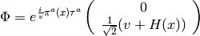
This breaks the gauge invariance. The  are going to be added to
are going to be added to  so we can set
so we can set  now.
now.
Higgs Terms¶

Plugging in the covariant derivatives and  in U-gauge (symmetry breaking):
in U-gauge (symmetry breaking):


Where we put


we defined  by the relation
by the relation
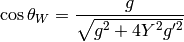
so that the expressions simplify a bit, e.g. we now get:


 is
is 
Leptonic Terms¶
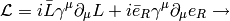
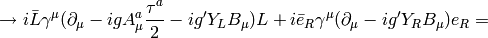

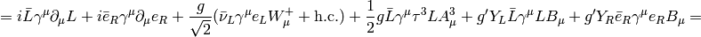


![+\left[ (\half g\sin\theta_W+Y_Lg'\cos\theta_W)\bar\nu_L\gamma^\mu\nu_L +(-\half g\sin\theta_W +Y_Lg'\cos\theta_W)\bar e_L\gamma^\mu e_L +Y_Rg'\cos\theta_W\bar e_R\gamma^\mu e_R \right]A_\mu](../images/math/a95cc02da4bc545efc0e70174ebfeaacc996a232.png)
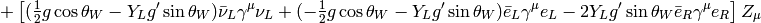
Where we substituted new fields  and
and  for the old ones
for the old ones  and
and  using the relation:
using the relation:

The angle must be the same as in the Higgs sector, so that the field is the same. We now need to make the following requirement in order to proceed further:

This follows for example by requiring that neutrinos have zero charge, i.e. setting  and substituting for from the definition (see the Higgs terms), from which one gets
and substituting for from the definition (see the Higgs terms), from which one gets  . From
. From  we now get
we now get

it now follows:


and the Lagrangian can be further simplified:


![+{g\over\cos\theta_W}\left[ \half \bar\nu_L\gamma^\mu\nu_L +(-\half + \sin^2\theta_W)\bar e_L\gamma^\mu e_L +\sin^2\theta_W\bar e_R\gamma^\mu e_R \right]Z_\mu=](../images/math/cf46681709e2ef6d8d37e65d31c09978c27d7f54.png)

![+{g\over2\cos\theta_W}\left[ \bar\nu\gamma^\mu(1-\gamma_5)\nu +\bar e\gamma^\mu (-\half+2\sin^2\theta_W+\half\gamma_5) e \right]Z_\mu](../images/math/c100a14b3094518060c5308d7ed2f5f886f329c1.png)
Where we used the relations  and
and  .
.


![= -{1\over2}W^-_{\mu\nu}W^{+\mu\nu} -{1\over4}A_{\mu\nu}A^{\mu\nu} -{1\over4}Z_{\mu\nu}Z^{\mu\nu} -g[(\partial_\mu A^1_\nu-\partial_\nu A^1_\mu)A^{2\mu}A^{3\nu}+ \hbox{cycl. perm. (123)}]](../images/math/825302cf7a0d16ff1c5946d45817087714197544.png)
![-{1\over4}g^2[(A^a_\mu A^{a\mu})(A^b_\nu A^{b\nu})- (A^a_\mu A^a_\nu)(A^{b\mu} A^{b\nu})]=](../images/math/5d290c2ce526c7f521beeaf16eb629bf3d47f479.png)
![= -{1\over2}W^-_{\mu\nu}W^{+\mu\nu} -{1\over4}A_{\mu\nu}A^{\mu\nu} -{1\over4}Z_{\mu\nu}Z^{\mu\nu} -g[A^1_\mu A^2_\nu \overleftrightarrow\partial^\mu A^{3\nu}+ \hbox{cycl. perm. (123)}]](../images/math/620be99cec845dea6cf766fd7455ec1b57fb48cb.png)
![-{1\over4}g^2[(A^a_\mu A^{a\mu})(A^b_\nu A^{b\nu})- (A^a_\mu A^a_\nu)(A^{b\mu} A^{b\nu})] =](../images/math/8a11c5d2238716648b28a8915ecad469446fc8af.png)


 and:
and:


GWS Lagrangian¶
Plugging everything together we get the GWS Lagrangian:
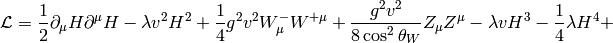


The free parameters are  , ,
, ,  ,
,  ,
,  ,
,  ,
,  .
.
Particle Masses¶
The particle masses are deduced from the terms

comparing to the above:

we get
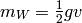
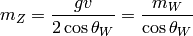

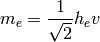

QFT¶
Evolution Operator, S-Matrix Elements¶
The evolution operator  is defined by the equations:
is defined by the equations:

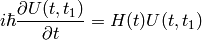
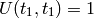
We are interested in calculating the S matrix elements:
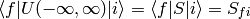
so we first calculate 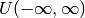. Integrating the equation for the evolution operator:
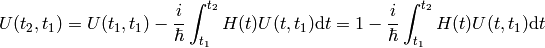
Now:
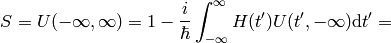


If  doesn’t contain derivatives of the fields, then
doesn’t contain derivatives of the fields, then  so:
so:
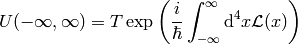
Let’s write  and
and  ,
,  . As a first step now, let’s investigate a scalar field, e.g.
. As a first step now, let’s investigate a scalar field, e.g.  (e.g. a Higgs self interaction term above), we’ll look at other fields later:
(e.g. a Higgs self interaction term above), we’ll look at other fields later:


where
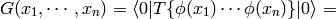

This is called the LSZ formula. Now we use the Wick contraction, get some terms like  integrate things out, this will give the delta function and
integrate things out, this will give the delta function and  ‘s and that’s it.
‘s and that’s it.
Let’s see how it goes for for the process  :
:
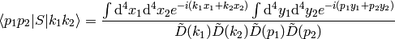
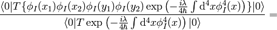
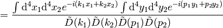


![\left. +{ \left(-{i\lambda\over4\hbar}\right)^2\int\d^4 x\,\d^4 y \braket{0|T\{\phi_I(x_1)\phi_I(x_2) \phi_I(y_1)\phi_I(y_2) \phi_I^4(x)\phi_I^4(y)\}|0} \over \braket{0|T\exp\left(-{i\lambda\over4\hbar}\int\d^4 x \phi_I^4(x) \right)|0} } +\cdots\right]=](../images/math/7c2fe43cb1ac648ba19f352e13ad904604fa40db.png)


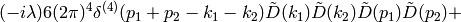
![\left. (-i\lambda)(\hbox{disconnected terms with not enough $\tilde D(\cdots)$s})+(-i\lambda)^2(\cdots)+\cdots\right]=](../images/math/2a9f3aed63f88b94329a0f4edf8e2a293178b58f.png)
![= (2\pi)^4\delta^{(4)}(p_1+p_2-k_1-k_2)\left[6(-i\lambda)+ 3(-i\lambda)^2\int{\d^4 k\over (2\pi)^4}\tilde D(k)\tilde D(p1+p2-k) +(-i\lambda)^3(\cdots)+\cdots\right]](../images/math/ff7a11e9940cc1f2dfdc34abeedb476ee2ab3366.png)
The denominator cancels with the disconnected terms. We used the Wick contractions (see below for a thorough explanation+derivation):

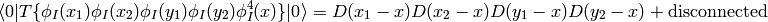
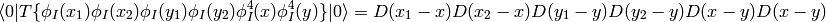

Where the “disconnected” terms are  and similar. When they are integrated over, they do not generate enough
and similar. When they are integrated over, they do not generate enough  propagators to cancel the propagators from the LSZ formula, which will cause the terms to vanish.
propagators to cancel the propagators from the LSZ formula, which will cause the terms to vanish.
For the  theory, one also needs the following contractions:
theory, one also needs the following contractions:


Thus it is clear that the only difference from the above is the factor  which after integrating changes to
which after integrating changes to  and this ends up in the final result.
and this ends up in the final result.
One always gets the delta function in the result, so we define the matrix element 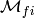 by:
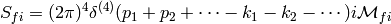
Wick Theorem¶
As seen above, we need to be able to calculate
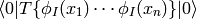
The Wick theorem says, that this is equal to all possible contractions of fields (all fields need to be contracted), where a contraction is defined as:

with

A few lowest possibilities:


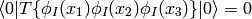
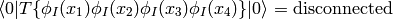


For the last two equations, not all possibilities of the connected graphs are listed (and also the combinatorial factor is omitted).


Feynman Rules¶
We can deduce a set of rules, so that one doesn’t have to repeat the whole calculation each time. For a scalar field we derived the rules above, for fermion and vector boson fields it’s more difficult.
ZZH interaction¶
Let’s calculate the  interaction in the SM, where
interaction in the SM, where  . Consider 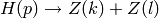:
. Consider 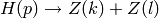:
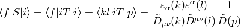
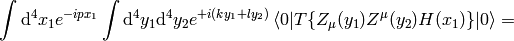
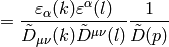
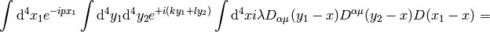
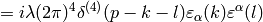
where we used the fact, that the only nonzero element of the Green function is
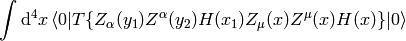
eeH interaction¶
Let’s calculate the  interaction in the SM, where
interaction in the SM, where  . Consider
. Consider  :
:
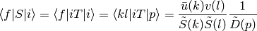
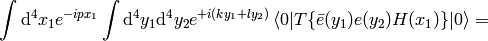
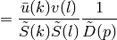


where we used the fact, that the only nonzero element of the Green function is

ee gamma interaction¶
Let’s calculate the 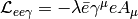 interaction in the SM, where  . Consider
. Consider  :
:
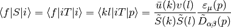

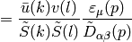


where we used the fact, that the only nonzero element of the Green function is
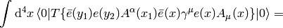

eeee interaction¶
Let’s calculate the interaction in the SM, where . Consider :
where we used the fact, that the only nonzero element of the Green function is
Low energy theories¶
Fermi-type theory¶
This is a low energy ( ) model for the EW interactions, that can be derived for example from the muon decay:
) model for the EW interactions, that can be derived for example from the muon decay:

From the SM the relevant Lagrangian is

and one gets the diagram  and the corresponding matrix element:
and the corresponding matrix element:
which when the momentum transfer  is much less than
is much less than  becomes
becomes
![iM = -i{g^2\over8m_W^2}[\bar u\gamma^\mu (1-\gamma_5) u] [\bar u\gamma_\mu (1-\gamma_5) v]](../images/math/e64b3e55a0fab2c2c93d2c9fddf2c2c962dc15dd.png)
but this element can be derived directly from the Lagrangian:
![\L = -{G_\mu\over\sqrt2} [\bar \psi_{\nu_\mu}\gamma^\mu (1-\gamma_5) \psi_\mu] [\bar \psi_e\gamma^\mu (1-\gamma_5) \psi_{\nu_e}]](../images/math/9b0d1db58342501f7ddecedcdd35bc33899fc53d.png)
with

This is the universal V-A theory Lagrangian (after adding the h.c. term).
Quantum Mechanics¶
From QED to Quantum Mechanics¶
The QED Lagrangian density is

where

and

is the gauge covariant derivative and ( is the elementary charge, which is
is the elementary charge, which is  in atomic units, i.e. the electron has a charge
in atomic units, i.e. the electron has a charge  )
)

is the electromagnetic field tensor. It’s astonishing, that this simple Lagrangian can account for all phenomena from macroscopic scales down to something like  . So it’s not a surprise that Feynman, Schwinger and Tomonaga received the 1965 Nobel Prize in Physics for such a fantastic achievement.
. So it’s not a surprise that Feynman, Schwinger and Tomonaga received the 1965 Nobel Prize in Physics for such a fantastic achievement.
Plugging this Lagrangian into the Euler-Lagrange equation of motion for a field, we get:


The first equation is the Dirac equation in the electromagnetic field and the second equation is a set of Maxwell equations ( ) with a source
) with a source  , which is a 4-current comming from the Dirac equation.
, which is a 4-current comming from the Dirac equation.
The fields  and
and  are quantized. The first approximation is that we take as a wavefunction, that is, it is a classical 4-component field. It can be shown that this corresponds to taking the tree diagrams in the perturbation theory.
are quantized. The first approximation is that we take as a wavefunction, that is, it is a classical 4-component field. It can be shown that this corresponds to taking the tree diagrams in the perturbation theory.
We multiply the Dirac equation by  from left to get:
from left to get:


and we make the following substitutions (it’s just a formalism, nothing more): ,  ,
,  ,
,  to get
to get

or:
This can be written as:

where the Hamiltonian is given by:

or introducing the electrostatic potential  and writing the momentum as a vector (see the appendix for all the details regarding signs):
and writing the momentum as a vector (see the appendix for all the details regarding signs):
The right hand side of the Maxwell equations is the 4-current, so it’s given by:

Now we make the substitution  , which states, that we separate the largest oscillations of the wavefunction and we get
, which states, that we separate the largest oscillations of the wavefunction and we get


Nonrelativistic Limit in the Lagrangian¶
We use the identity  to get:
to get:


![=2mc^2\left[{1\over2}i(\varphi^*{\partial\varphi\over\partial t}- \varphi{\partial\varphi^*\over\partial t})- {1\over2m}\partial^i\varphi^*\partial_i\varphi +{1\over2mc^2}{\partial\varphi^*\over\partial t} {\partial\varphi\over\partial t}\right]](../images/math/e45cda3b9b540a9f99a0c7c34b986efb45cd72c3.png)
The constant factor  in front of the Lagrangian is of course irrelevant, so we drop it and then we take the limit
in front of the Lagrangian is of course irrelevant, so we drop it and then we take the limit  (neglecting the last term) and we get
(neglecting the last term) and we get
After integration by parts we arrive at the Lagrangian for the Schrödinger equation:
Klein-Gordon Equation¶
The Dirac equation implies the Klein-Gordon equation:


Note however, the in the true Klein-Gordon equation is just a scalar, but here we get a 4-component spinor. Now:

![[D_\mu, D_\nu] = D_\mu D_\nu-D_\nu D_\mu=ie(\partial_\mu A_\nu)- ie(\partial_\nu A_\mu)](../images/math/1c0b4cb73fe56a8b382e6bffa61ea765a0553f42.png)
We rewrite  :
:


The nonrelativistic limit can also be applied directly to the Klein-Gordon equation:


Taking the limit we again recover the Schrödinger equation:
we rewrite the right hand side a little bit:


Using (see the appendix for details):

we get the usual form of the Schrödinger equation for the vector potential:

A little easier derivation:


and letting we get the Schrödinger equation:

Perturbation Theory¶
We want to solve the equation:
(1)
with  , where
, where  is time-independent part whose eigenvalue problem has been solved:
is time-independent part whose eigenvalue problem has been solved:

and  is a small time-dependent perturbation. form a complete basis, so we can express in this basis:
is a small time-dependent perturbation. form a complete basis, so we can express in this basis:
(2)
Substituting this into (1), we get:

so:

Choosing some particular state of the Hamiltonian, we multiply the equation from the left by  :
:

where . Using :

we integrate from  to
to  :
:
Let the initial wavefunction at time be some particular state  of the unperturbed Hamiltonian, then
of the unperturbed Hamiltonian, then  and we get:
and we get:
(3)
This is the equation that we will use for the perturbation theory.
In the zeroth order of the perturbation theory, we set  and we get:
and we get:

In the first order of the perturbation theory, we take the solution  obtained in the zeroth order and substitute into the right hand side of (3):
obtained in the zeroth order and substitute into the right hand side of (3):
In the second order, we take the last solution, substitute into the right hand side of (3) again:


And so on for higher orders of the perturbation theory — more terms will arise on the right hand side of the last formula, so this is our main formula for calculating the  coefficients.
coefficients.
Time Independent Perturbation Theory¶
As a special case, if  doesn’t depend on time, the coefficients simplify, so we calculate them in this section explicitly. Let’s take
doesn’t depend on time, the coefficients simplify, so we calculate them in this section explicitly. Let’s take

so at the time the Hamiltonian  is unperturbed and we are interested in the time
is unperturbed and we are interested in the time  , when the Hamiltonian becomes
, when the Hamiltonian becomes  (the coefficients will still depend on the
(the coefficients will still depend on the  variable) and we do the limit
variable) and we do the limit  (this corresponds to smoothly applying the perturbation at the time negative infinity).
(this corresponds to smoothly applying the perturbation at the time negative infinity).
Let’s calculate  :
:


Taking the limit :


Substituting this into (2) evaluated for :


The sum  is over all , similarly for the other sum. Let’s also calculate the energy:
is over all , similarly for the other sum. Let’s also calculate the energy:

To evaluate this, we use the fact that  and
and  :
:
Where we have neglected the higher order terms, so we can identify the corrections to the energy  coming from the particular orders of the perturbation theory:
coming from the particular orders of the perturbation theory:


Scattering Theory¶
The incoming plane wave state is a solution of
with  . E.g.
. E.g.


We want to solve:
The solution of this is:
where

is the Green function for the Schrödinger equation.  is not unique, it contains both outgoing and ingoing waves. As shown below, one can distinguish between these two by adding a small
is not unique, it contains both outgoing and ingoing waves. As shown below, one can distinguish between these two by adding a small  into the denominator, that moves the poles of the Green functions above and below the
into the denominator, that moves the poles of the Green functions above and below the  -axis:
-axis:


Both  and
and  are well-defined and unique. One can calculate both Green functions explicitly:
are well-defined and unique. One can calculate both Green functions explicitly:


Assuming , we can taylor expand  :
:


and simplify the result even further:

Note: both functions may be divided by the factor  due to the momentum integration.
due to the momentum integration.
Let’s get back to the solution of the Schrödinger equation:

It contains the solution  on both sides of the equation, so we express it explicitly:
on both sides of the equation, so we express it explicitly:

and multiply by  :
:

where  is the transition matrix:
is the transition matrix:


Then the final solution is:
and in a coordinate representation:


Plugging the representation of the Green function for in:

where the scattering amplitude  is:
is:

Where  is the final momentum.
is the final momentum.
The differential cross section  is defined as the probability to observe the scattered particle in a given state per solid angle, e.g. the scattered flux per unit of solid angle per incident flux:
is defined as the probability to observe the scattered particle in a given state per solid angle, e.g. the scattered flux per unit of solid angle per incident flux:

where we used and


Let’s write the explicit formula for the transition matrix:
The Born approximation is just the first term:


Appendix¶
Units and Dimensional Analysis¶
The evolution operator is dimensionless:
So:
![\left[\int_{-\infty}^{\infty}\d^4 x \L(x) \right] = [\hbar] = M^0](../images/math/c4aa0f6d57e1909575e8b6c18701262d2f108932.png)
where  is an arbitrary mass scale. Length unit is
is an arbitrary mass scale. Length unit is  , so then
, so then
![[\L(x)] = M^4](../images/math/f75cae9cf6b5b7fb4eb93a75c76188bddefcfbe6.png)
For the particular forms of the Lagrangians above we get:
![[m\bar ee] = [m^2 Z_\mu Z^\mu] = [m^2 H^2] = [i\bar e\gamma^\mu\partial_\mu e] = [\L] = M^4](../images/math/1fce247f3cc6fab56a31662b1d28de3e4be23aec.png)
so ![[\bar ee] = M^3](../images/math/bc979cb7ac21d6ed761fbd8fc85e23e780fd1fbf.png) ,
, ![[Z_\mu Z^\mu]=[H^2] = M^2](../images/math/1d84ee418121e3a19e66cab0069d6f11e895cb40.png) and we get
and we get
![[e] = [\bar e] = M^{3\over2}](../images/math/925305ea14260bccaf0e3d8a70b79cc1b81fa947.png)
![[Z_\mu] = [Z^\mu] = [H] = [\partial_\mu] = [\partial^\mu] = M^1](../images/math/9537264abea92a372179581c3efdc995c4e375fc.png)
Example: what is the dimension of  in ? Answer:
in ? Answer:
![[\L] = [G_\mu \bar\psi\psi\bar\psi\psi]](../images/math/9718864a07a1e0b0208112449b1229a0f645775b.png)
![M^4 = [G_\mu] M^{3\over2}M^{3\over2}M^{3\over2}M^{3\over2}](../images/math/e36aeaa285f37706b0e0462ab72f0eec3224f9cf.png)
![[G_\mu] = M^{-2}](../images/math/9ae9052d51a1608f2e1cd5206ab1b4950cd24a1b.png)
In order to get the above units from the SI units, one has to do the following identification:


The SI units of the above quantities are:
![[\phi] = \rm V={kg\,m^2\over A\,s^3}=M](../images/math/06e874ac10299c85b6295669712e5195bdd63101.png)
![[A_\mu]={[\phi]\over [c]}=\rm{V\,s\over m} = {kg\, m\over A\,s^2}=M](../images/math/64c09747d145a35ec43ec4fe3f497b92090b4122.png)
![[c]=\rm {m\over s} = 1](../images/math/701103ddba0fb5fd3b2921add9605cd726d3ee37.png)
![[e]=\rm C = A\, s=1](../images/math/8dcc42411b6d3c14b74a2bd7503adef12007dbc5.png)
![[\partial_\mu]=\rm {1\over m}=M](../images/math/4dafda5c6ac0bc77ca7f7423c55f3a642416e03b.png)
![[F_{\mu\nu}]=[\partial_\mu A_\nu]=\rm {kg\over A\,s^2}=M^2](../images/math/da5e9867d3c83212878360c5755e4d7bd63909b8.png)
![[\L]=[F_{\mu\nu}]^2=\rm {kg^2\over A^2\,s^4}=M^4](../images/math/b8f4b549c7b17aac7718deda1ca311664076295b.png)
![[\psi]=\rm {kg^{1\over2}\over A\,m\,s}=M^{3\over2}](../images/math/6904e49363d8b9dfbe7871dbef82f998be4f11ad.png)
The SI units are useful for checking that the  , and
, and  constants are at correct places in the expression.
constants are at correct places in the expression.
Tensors in QFT¶
In general, the covariant and contravariant vectors and tensors work just like in general relativity. We use the metric  (e.g. signature -2, but it’s possible to also use the metric with signature +2). The four potential is given by:
(e.g. signature -2, but it’s possible to also use the metric with signature +2). The four potential is given by:

where  is the electrostatic potential. Whenever we write
is the electrostatic potential. Whenever we write  , the components of it are given by the upper indices, e.g.
, the components of it are given by the upper indices, e.g.  . The components with lower indices can be calculated using the metric tensor, so it depends on the signature convention:
. The components with lower indices can be calculated using the metric tensor, so it depends on the signature convention:

In our case we got  and
and  (if we used the other signature convention, then the sign of
(if we used the other signature convention, then the sign of  would differ and
would differ and  would stay the same).
would stay the same).
Gradient is defined as:
the upper indices depend on the signature, e.g. for -2:

and +2:

Momentum ( ) and energy (
) and energy ( ) is combined into 4-momentum as
) is combined into 4-momentum as
Note: for the signature +2, we would get  and
and  .
.
For the minimal coupling  we get:
we get:


and for the lower indices:


Multipole expansion¶


We can also use the formula:

and rewrite the expansion using spherical harmonics: